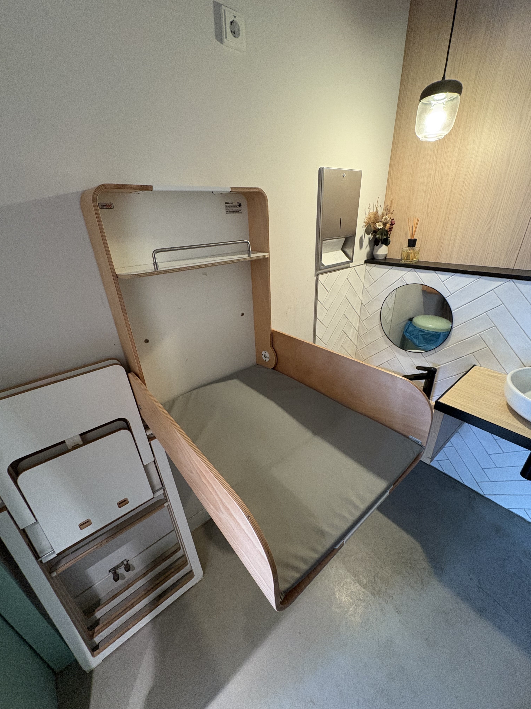

We've explored Berlin to find the best spots for changing diapers — and we've ranked our top 10. From cafes to cultural centers, this list includes places that were tested, loved, and submitted by real parents. The ranking may change as new places are added, so check back often. And if you know a great spot, add it here!
10. Erchy's

A warm, relaxed café where the staff welcomes kids and strollers without a blink. The changing table is clean and easy to access — and the coffee is great, too.
9. Luuv Café

This lovely spot near Ostkreuz is full of baby-friendly touches: play areas, high chairs, and a spotless changing station tucked in the back. Perfect for a midday break with your little one.
8. SmartKids

Not just a café, but a full play cafe concept designed for babies and toddlers. The changing setup here is solid — clean, functional, and located near the action.
7. Le Belfort

A quieter café in Prenzlauer Berg where you’ll find both good food and a surprisingly thoughtful changing station. A hidden gem for parents in the area.
6. Kulturhaus Insel Berlin

A biergarten located on a small island in the heart of Berlin. The changing station is inside the women’s restroom and usually very clean and well maintained. The fold-down table can be operated with one hand — because your baby is probably in the other.
5. BRLO

This brewery in Gleisdreieck is surprisingly kid-friendly. The changing station is located on the ground floor in the accessible restroom. It’s clean, stroller-accessible, and even better — there’s a sandpit outside for the kids to play while you enjoy a beer (or try to).
4. Mignon Sicilian Bakery

Delicious Sicilian pastries, friendly staff, and a surprisingly well-equipped changing table in the restroom. A sweet spot to rest and refresh with your little one.
3. MaraLou Café

A cozy neighborhood café with excellent coffee, plenty of space for strollers, a clean and accessible changing table, and warm service. MaraLou is truly baby- and parent-friendly.
2. Kap Frida
Small, cozy and truly baby-friendly, Kap Frida offers toys, a lowered sink, a clean changing station, and excellent food. Located on the Stralau peninsula, it’s a great stop during a sunny walk by the water.
1. dm

The beloved go-to for many parents in Germany. With over [NUMERO] locations across the country, most dm stores offer a well-equipped diaper changing station. You’ll typically find a changing pad, disposable covers, wipes, hand sanitizer, and even free diapers in various sizes. The only downside? Stores are closed on Sundays and public holidays. Always check online to make sure your local branch has a changing table before heading out.
Want to help other parents? Submit a new location to the map.